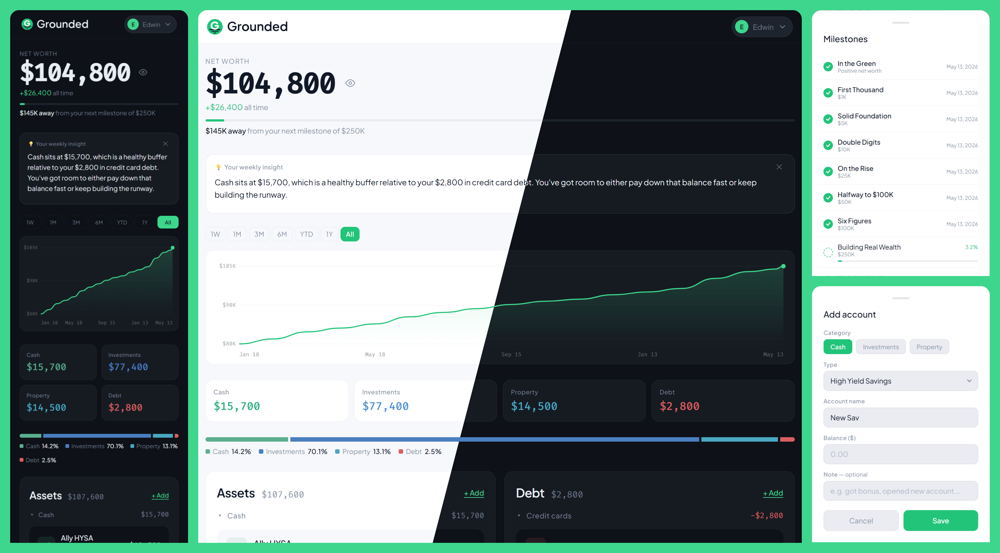

Grounded is a free, private net worth tracker that I designed and built solo. Every
dollar a customer enters lives inside a Google Sheet in their own Drive, not on a
Grounded server. I'm a designer, not a software engineer. Claude was my engineering
partner. Live at usegrounded.app.
RoleSolo · Designer + builder
TypeSelf-initiated · 2025–26
PlatformWeb · GitHub Pages
Status● Live, in Google OAuth verification

01 · Why I built it
I used Mint for years. Then I had to find something else.
When Mint shut down I tried going back to a spreadsheet. It was clunky enough that I
gave up on it after a few weeks. The obvious move was one of the other tools
(Empower, YNAB, Monarch), but every one of them wanted me to connect my actual
accounts to their servers, and most wanted a monthly subscription on top of that.
After enough headlines about companies leaking customer data, paying every month to
hand my numbers over to a new vendor wasn't a tradeoff I wanted to make for a tool
I was only going to open once a week.
What I wanted sat in between. A spreadsheet I controlled, with manual entry kept
honest, plus the few things that don't need to be manual (live crypto prices today,
maybe stock tickers later if users ask for them). And on top of that, a real
dashboard. Insights laid out cleanly, plain-English feedback on how I was doing, a
few best-practice nudges, and the data-entry UX of an actual product instead of the
tab-and-click dance of a spreadsheet.
At some point the thought turned into: why not build it myself? So I did.
It's mainly a tool for me. I haven't advertised it, posted about it, or pitched it.
A few friends know it exists. If it grows into something more, that's good. The
architecture doesn't need it to.
The privacy model came first; the product was built around it. Grounded uses Google
OAuth with the drive.file scope, the most restrictive Drive permission
available. That means Grounded can only read and write files it created itself.
Nothing else in the user's Drive is visible to it. Ever.
On first sign-in, Grounded creates one private Google Sheet inside the user's own
Drive: Accounts, History, Events, Meta. Every snapshot, every value, every change
lives there. There's no Grounded database. No user table. No "we have your data"
waiting to be breached. If a customer ever wanted to leave, they'd open Drive, see
the file, and decide what to do with it. It's already theirs.
The architecture decision
No backend. No data storage. No subscription.
Grounded runs as a single static HTML file hosted on GitHub Pages. Every read and
write goes directly between the user's browser and Google's APIs. The only thing on
"my side" is a small Cloudflare Worker that proxies one specific call (the weekly
AI insights) so my Claude API key never lives in the browser. The worker verifies a
Google ID token on every request and rate-limits per user, so the AI endpoint
can't be abused by anyone who isn't already signed into Grounded.
No cookies on the dashboard, no analytics on the dashboard, no account I keep on
the user's behalf. Google Analytics runs on the marketing pages only. The dashboard
sees financial data, so it stays untracked.
03 · What it does
Track everything in one place. Without giving anything up.
The product itself is straightforward. Five account types. A net worth headline with
a chart underneath. Time filters. A milestone system that nudges you from your first
tracked dollar to a million. And one small AI moment each week. On desktop the dashboard
splits two columns, assets on the left and debt on the right, then collapses to a single
column under 900px.
$
Cash + investments + crypto + property + debt
Five account categories cover most personal balance sheets. Add as many accounts inside each as you need.
₿
Live crypto prices
CoinGecko hits the API directly from the browser. Current prices stay current without Grounded touching the data.
↗
Net worth history
Every snapshot you save plots on the history chart. Filter by 1M, 3M, 6M, YTD, 1Y, or All. The line tells the story.
★
Milestones
$1K, $5K, $10K, $25K, $50K, $100K, all the way to $1M. Small celebrations as you cross each one. Optional, dismissible.
AI
Weekly insights
Once a week, Claude reads your recent history (through the worker proxy) and writes a short, personalized read on what's moving. Pure observation. No financial advice.
◧
At a glance
YTD growth, average monthly growth, percent invested, all-time high. Computed live from the same Sheet. A row of context above the chart.
▣ ▣ ▣
Placeholder · key screens
Drop screenshots of the main screens (dashboard, account detail, milestone celebration, weekly insight) so the visual story lands.
Selected screens. Same Sheet underneath, different views over it.04 · Built with Claude
I designed every screen. Claude wrote the code.
The honest version: I'm a designer. I can read code, I can edit a stylesheet, but I'm
not a software engineer. Grounded exists because Claude is good enough now that a
designer with a clear brief can ship a real product solo. The work split looked like
this:
I designed every screen, copy line, and interaction. Brand, typography, layout, the milestone vocabulary, the privacy framing. That's the designer side of the job, and it didn't change.
I wrote the requirements like a brief. "Here's what the user sees when they sign in. Here's what the Google Sheet needs to look like. Here's the milestone trigger logic." Specific enough to implement, loose enough to let the implementation breathe.
Claude implemented. The OAuth handshake, the Sheets API calls, the chart rendering, the worker that proxies the Claude API call without exposing my key. I reviewed everything, ran it, broke it, asked questions, refined.
The build is intentionally simple. One static HTML file, a tiny worker for the AI
proxy, and a CDN-friendly stack of vanilla JavaScript and CSS. No build step. No
framework. Easy to read, easy to host for free.
Claude APIGoogle Drive API · drive.file scopeCoinGecko APICloudflare Worker (AI proxy)GitHub PagesVanilla HTML / CSS / JSPlus Jakarta Sans + Fira Code
The meta-observation
What an AI partner like Claude actually unlocks for a designer isn't shortcuts. It's
scope. I could not have shipped Grounded solo five years ago. I could have specced
it, mocked it, pitched it, but I couldn't have built it. The shift isn't that
engineering is easier. It's that a designer can ship something real on their own
time, with their own ideas, without recruiting an engineer who has their own
backlog. That changes what side projects can be.
05 · Reflection
What Grounded taught me.
What worked
Privacy as the architecture, not the marketing.
Choosing the strictest Google Drive scope before drawing a single screen meant the product couldn't accidentally drift into surveillance territory later. Every later decision had to clear that bar. The constraint kept the product honest.
What I'd change
Onboarding the spreadsheet, not just the app.
Customers who haven't lived in a Google Sheet view of their finances need more handholding than I currently give them. The current onboarding signs you in, creates the sheet, and drops you on the dashboard. Worth investing in a clearer "here's what just happened in your Drive" moment.
Open question
How much AI is the right amount of AI?
Weekly insights feel right. Daily would be noise. Monthly might be too sparse. The current cadence is a guess, not a tested answer. Once I have a meaningful number of weekly users, I'll have a real read on whether the AI moment earns its place or fades into the background.
What's next
Recurring contributions, sharper milestones, maybe an export.
The next round of work is about respecting how customers actually use the tool. Recurring contributions (so you don't have to enter your paycheck every two weeks). Sharper milestone messaging. And probably a clean export to PDF or a printable annual summary for the people who want one.
Next case study
Ruggable · 2024 · AI
Designable. Started as a chatbot.
Ruggable's AI rug recommender. Started as a chatbot, then a form. Shipped as a single
photo upload that returns curated picks in seconds.